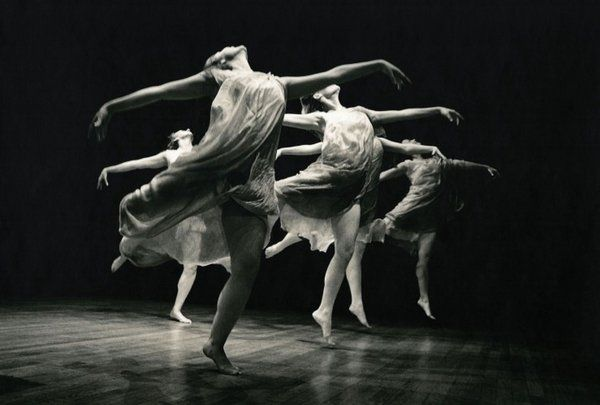

Danza
La danza es pura energía y emoción. Es una forma de comunicarse sin palabras, donde el cuerpo dice todo lo que la voz no puede. Desde las danzas tribales que celebraban la cosecha hasta los estilos actuales como el hip-hop, el K-pop o el contemporáneo, bailar siempre fue una forma de expresar identidad, cultura y libertad. Un dato curioso: En la antigua Grecia, los guerreros practicaban danza para mejorar su fuerza y coordinación antes de las batallas. También, en muchas culturas indígenas de América, las danzas eran rituales para conectar con la naturaleza o pedir lluvia. Hoy, la danza está en todas partes: en escenarios, películas, festivales y redes sociales. Cada paso, salto o giro puede convertirse en una forma de arte compartida con el mundo.
